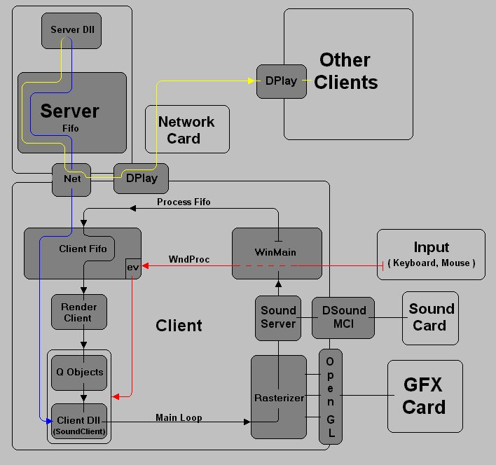

DPID from=*data;}
data+=2;
if(*data==NET_RECEAVE_NETID) //NET_ID for some dll
__RECEAVE_UIN(data,DLL_NAME);
else if(*data==NET_SERVERUP) //server is running
__GETUIN(DLL_NAME);
else if(UIN&&*data==UIN) //message for us
{
//handle message
}
| ADDR:TYPE | data[0]:DPID | data[1]:DWORD | data[2-?]:? |
| Content | sender's DPlayID | MSG_ID (NET for net-Msgs) | Message |